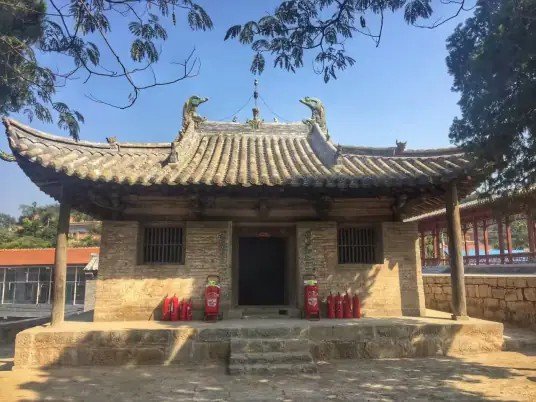

天台庵 |
返回主页 |  | |
| 天台庵，位于山西省长治市平顺县北耽车乡王曲村中一坛形孤山上。始建于唐天祐四年（907年）另一说：始建年代为五代后唐天成四年（929年），为北方天台宗庵院，占地面积970平方米。 天台庵，建筑面积90余平方米，现仅存正殿和一通石碑。正殿建于1米高的石台基上。面阔7.15米，进深7.12米。单檐歇山顶，简板布瓦，琉璃脊兽，屋坡举折平缓，四翼如飞。檐下四周设台明，正面明间台明下安装踏跺。殿身四周为圆木柱，柱间施阑额，无普拍枋，柱础为覆盆式，柱头卷杀较缓，柱上安有斗拱承托屋檐。殿内无柱，四椽栿通达前后檐柱，结构简练，相交严实，无繁杂装饰之感，使殿内空间显得更大，与五台山南禅寺大殿的建筑结构相近，体现唐代建筑的特点。 1988年1月13日，天台庵被国务院公布为第三批全国重点文物保护单位。 |
|||